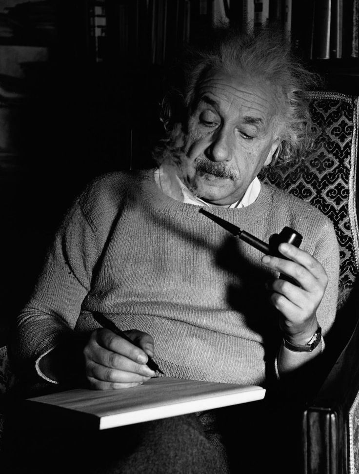
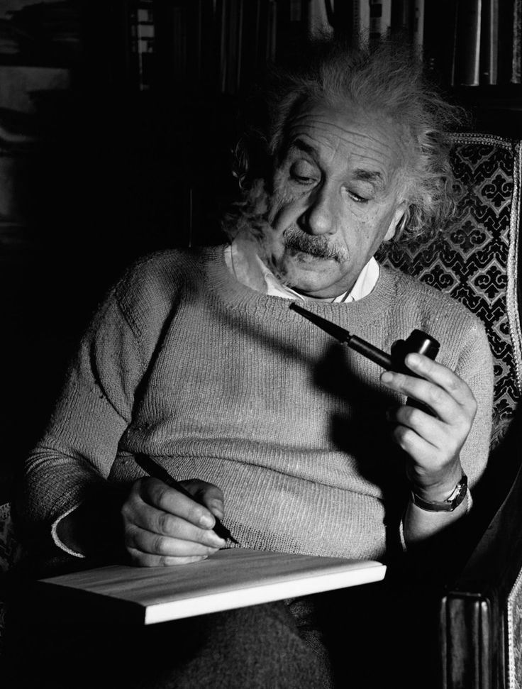

ALBERT EINSTEIN
PHYSICIST
Hi there, I'm Albert Einstein, the guy with the crazy hair and even crazier ideas! You might have heard of me—I'm the one who shook up the whole physics scene with my theory of relativity. I spent my life chasing after the secrets of the universe. Nice to meet you! This approach utilizes flexbox to create a row layout with the image on the left and the content on the right. Adjust the margin-right value in the .image class to control the spacing between the image and the content. The image will maintain its aspect ratio and won't exceed its container's width."
Books
Theory of Relativity
Social and General Times
World as I see It
Einstein's Violin
Auto Biography
Papers

The Swiss years
1900-1914
"In Switzerland, I immersed myself in physics at the Swiss Federal Institute of Technology, Zurich, where the beauty of the Alps often inspired my thoughts. As a patent examiner in Bern, I balanced practical applications with theoretical exploration, refining my understanding of science. These formative years were pivotal, shaping the foundations of my groundbreaking theories and scientific legacy."

The Berlin years
1914-1929
"The Berlin years encapsulated a period of intense intellectual pursuit, where I found myself immersed in the vibrant scientific community of Germany's capital. During this time, I delved deeper into the mysteries of the universe, refining my theories and contributing to the forefront of physics. Berlin provided the fertile ground upon which my ideas flourished, shaping the course of modern science."
Awards
Nobel Prize in Physics (1921)
Albert Einstein was awarded the Nobel Prize in Physics in 1921 "for his services to theoretical physics, and especially for his discovery of the law of the photoelectric effect".
Matteucci Medal (1923)
The Matteucci Medal is an Italian award established in 1870 by the Accademia Nazionale delle Scienze (National Academy of Sciences). Einstein received this medal in 1923.
Matteucci Medal (1923)
The Matteucci Medal is an Italian award established in 1870 by the Accademia Nazionale delle Scienze (National Academy of Sciences). Einstein received this medal in 1923.
Hobbies

Playing the Violin

Sailing

Exploring Nature

Philosophical Discussions
Gallery
 


Blogs
Special Theory of Relativity (1905)
Einstein published this groundbreaking paper in the Annalen der Physik, introducing the concepts of time dilation and length contraction, among others.
General Theory of Relativity (1915)
This paper, also published in the Annalen der Physik, presented Einstein's theory of gravity, which revolutionized our understanding of the universe.
E=mc² and Mass-Energy Equivalence (1905)
In another paper from his "miracle year" of 1905, Einstein derived the famous equation E=mc², which describes the equivalence of mass and energy.